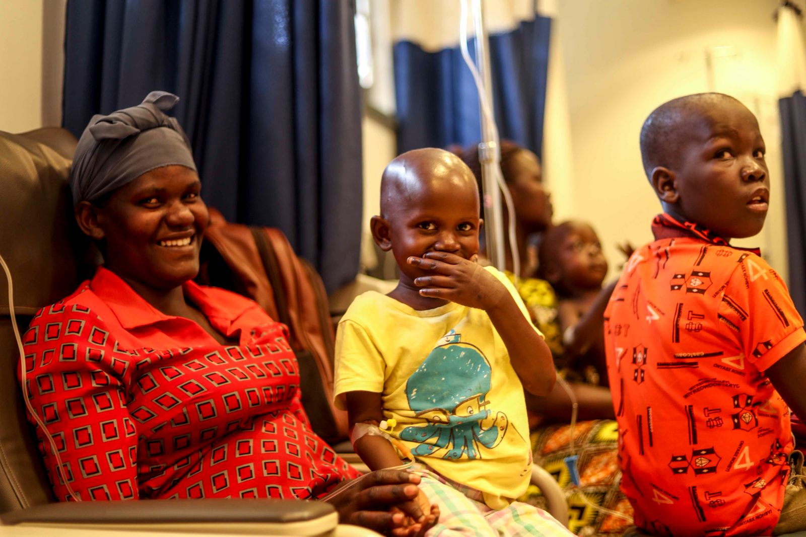
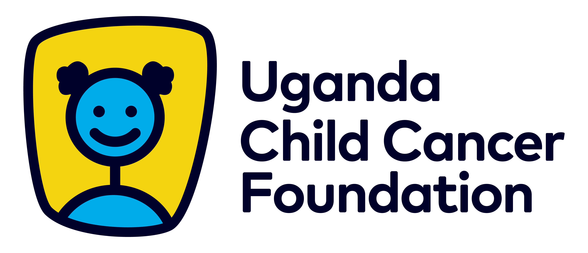
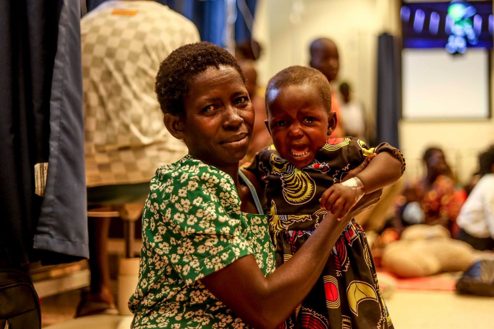
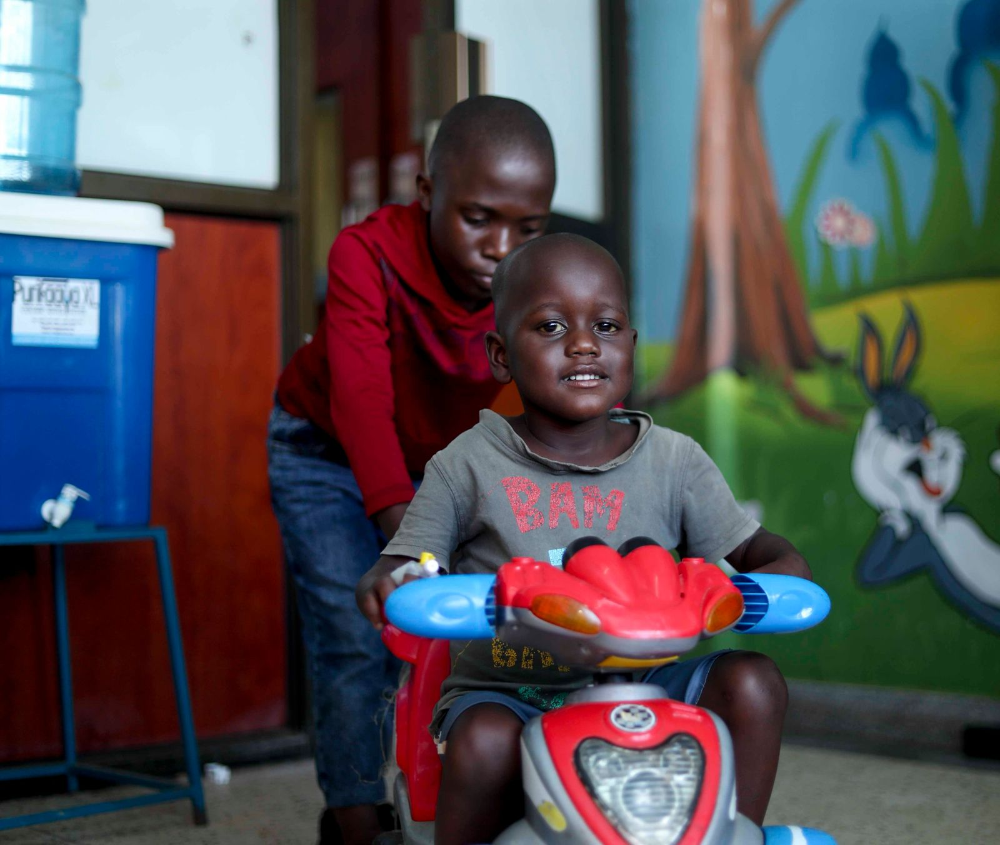
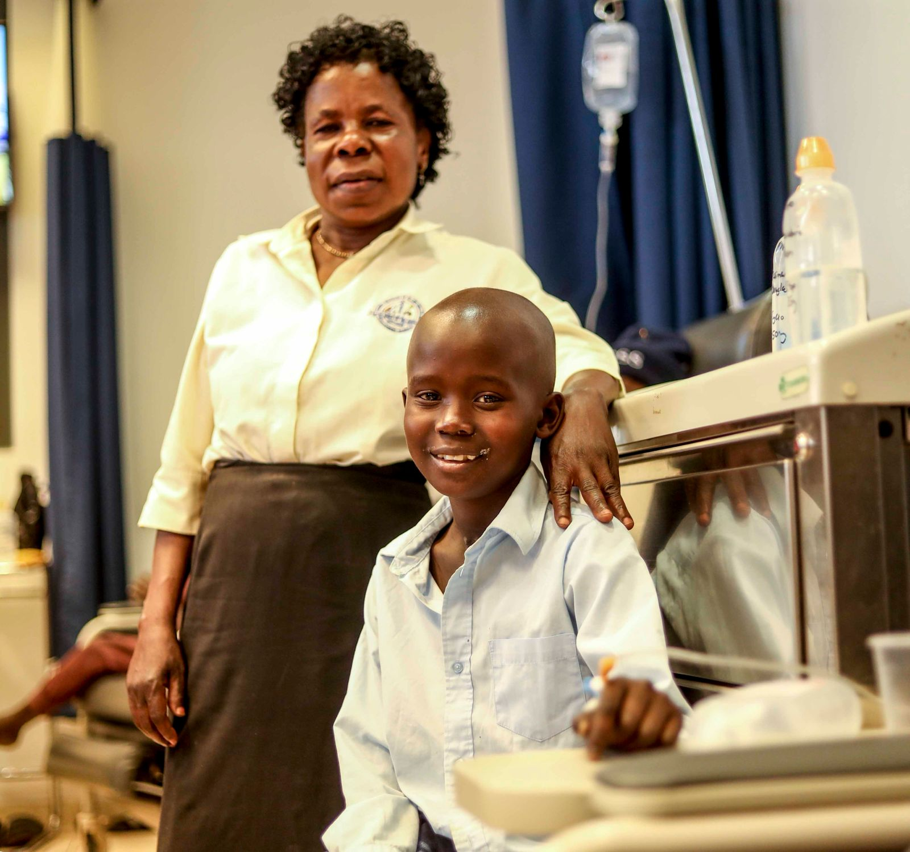
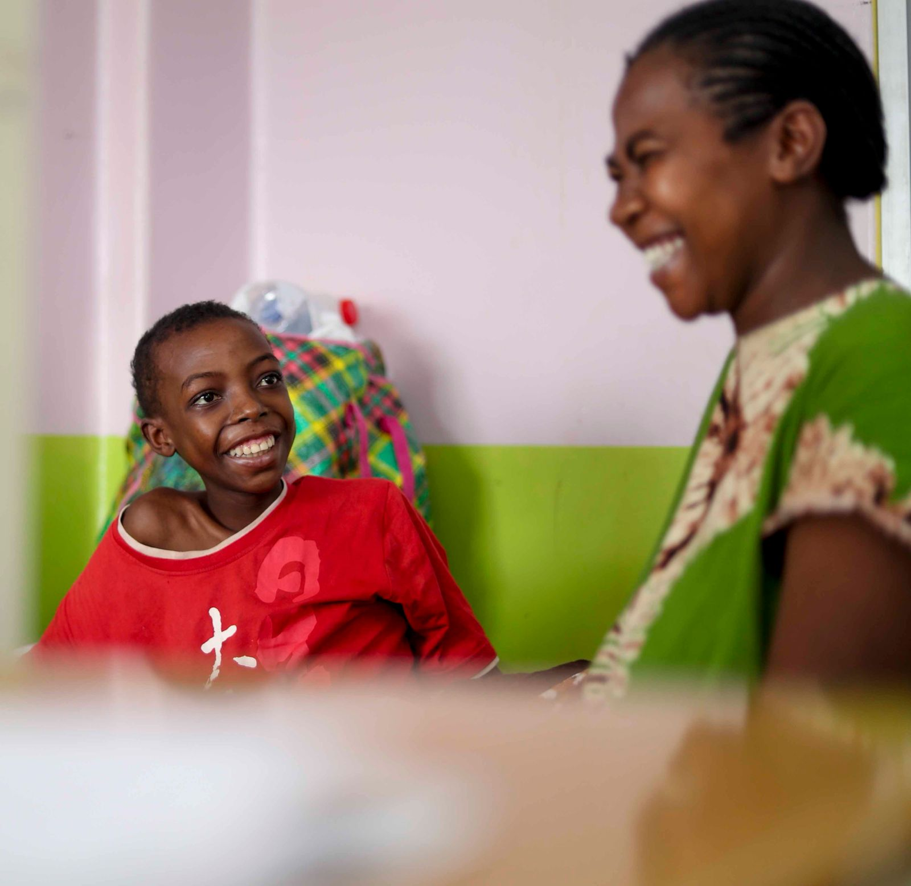

A society free of childhood cancer.

In 2006, a group of doctors, nurses, and parents gathered at the Uganda Cancer Institute with a shared conviction: that the children in their care deserved more than medicine alone. These were families who had travelled hundreds of kilometres to reach Kampala, only to face the prospect of watching their children abandon treatment because they could not afford a bus fare home, a meal, or the emotional support to keep going. The medical system was doing its part — but the system had gaps, and those gaps were costing children their lives.
From that gathering, the Uganda Child Cancer Foundation was born. It was Uganda's first civil society organisation dedicated exclusively to childhood cancer, built not by outsiders or institutions, but by the people closest to the children themselves. Nearly two decades later, that founding spirit — practical, compassionate, and uncompromising — remains at the heart of everything UCCF does.

The Uganda Child Cancer Foundation (UCCF) is a nationally registered Non-Governmental Organisation (Registration No. S.5914/6566), operating from the campus of the Uganda Cancer Institute — at the very heart of Uganda's paediatric oncology system. In close partnership with UCI, UCCF provides the critical non-medical support that enables children to access, remain in, and complete cancer treatment.
From its origins as a small psychosocial support group, UCCF has grown into a nationally recognised foundation with integrated programmes spanning patient support, education and awareness, research, and advocacy — reaching over 1,000 children annually and touching communities across Uganda through its schools network of over 200 institutions.
A society free of childhood cancer.
To contribute towards effective childhood cancer control through patient support, awareness creation, advocacy, research, and mentorship.
To facilitate informed decision-making, evidence-based policy change, and life skills for healthy, productive, and empowered communities — as well as better treatment outcomes for children with cancer.
UCCF's work is grounded in core values that guide every decision, every partnership, and every interaction with the children and families we serve.
Every child with cancer deserves care that sees the whole child and the whole family — not just the disease.
We serve all children and families regardless of background, religion, ethnicity, or economic status, without discrimination.
We hold ourselves to the highest standards of honesty and ethical conduct in all that we do.
As stewards of entrusted resources, we commit to open financial reporting and annual audited accounts.
We invest in research, education, and awareness because an informed community is a community that can act.
We are guided by the conviction that doing good unto a child is an act of service to something greater than ourselves.
Childhood cancer is one of Uganda's most urgent and underaddressed public health challenges. Uganda records an estimated 3,200 new childhood cancer cases every year, yet only one in three children ever accesses specialised treatment. New diagnoses at the Uganda Cancer Institute alone rose from 700 in 2022 to 800 in 2025 — a 14% increase in just three years — reflecting a burden that is growing faster than the system's capacity to respond.
Over 80% of children who do access treatment receive it at the Uganda Cancer Institute, where survival rates remain below 35% — far below the over 90% cure rates achieved in high-income countries. Put plainly: for every ten children who begin treatment at UCI, fewer than four will survive — not because treatment is unavailable, but because they could not stay in it. The leading driver of this tragedy is treatment abandonment: families forced to discontinue care because they cannot afford transport, accommodation, daily nutrition, or essential medications. For a child in the middle of chemotherapy, missing even a few sessions can be fatal.
UCCF exists to close this gap — not by replacing the health system, but by ensuring that every child already within it has the support they need to remain in care, complete their treatment, and survive.

No child battling cancer in Uganda should be left behind. Every child deserves a fighting chance — regardless of where they come from or what their family can afford. That is not an aspiration. It is a commitment.— Moses Echodu, Executive Director, UCCF
UCCF provides direct, life-enabling support to over 1,000 children annually at the Uganda Cancer Institute. Our interventions address the full spectrum of barriers — medical and non-medical — that most frequently prevent children from completing treatment. Without this support, many families simply cannot navigate the journey from diagnosis to cure.
Accurate and timely diagnosis is the foundation of effective cancer treatment, yet many families arrive at UCI unable to afford the tests required to begin or monitor their child's care. UCCF bridges this gap by funding essential diagnostic requirements including blood tests (full blood counts, tumour markers, liver and kidney function panels), imaging services such as X-rays, ultrasounds, CT scans and MRI scans, as well as biopsies and histopathology. These diagnostics must be repeated throughout a child's treatment cycle to monitor response, adjust protocols, and detect complications early. Without them, clinicians cannot treat safely, and children cannot progress.
Chemotherapy and other cancer-directed therapies are at the core of childhood cancer treatment. UCCF works in close partnership with UCI to ensure children have access to the medications prescribed under their treatment protocols. While UCI provides significant subsidised care, gaps in drug availability — caused by supply chain disruptions, shortages, or the need for specialist medications not routinely stocked — can interrupt treatment at critical moments. UCCF intervenes to procure and supply these medications, ensuring that treatment protocols are not broken. Incomplete treatment not only reduces the chance of survival — in some cancers, it actively increases the risk of drug-resistant relapse.
Cancer treatment takes a severe toll on the body. Chemotherapy suppresses the immune system, damages the gut lining, causes pain, and leaves children vulnerable to infections that can be life-threatening during treatment. UCCF funds antibacterials and antifungals to prevent and treat infections in immunocompromised children, antivirals to protect against viral complications, pain management medications, immune boosters and growth factors to rebuild white blood cell counts, and anti-nausea medications to manage side effects that, left unaddressed, cause rapid deterioration. These medications do not treat cancer directly — but without them, children cannot tolerate the treatment that does.

Malnutrition is one of the most significant and underappreciated barriers to childhood cancer survival in Uganda. Children undergoing chemotherapy have dramatically increased nutritional needs at exactly the moment when their appetite is suppressed, their gut is damaged, and their families are least able to provide adequate food. Poor nutrition reduces a child's ability to tolerate chemotherapy, increases treatment-related complications, slows recovery, and directly reduces survival rates. Since launching our Nutrition Programme in 2023, UCCF has provided daily, nutritionally balanced meals to up to 150 children in the paediatric oncology ward at UCI — with measurable improvements in treatment completion rates. For many of these children, the meal provided by UCCF is the only meal they will receive that day.
Many families travel hundreds of kilometres to reach UCI, and treatment requires repeated journeys over weeks and months. Transport cost is, for many families, the single most decisive factor in whether a child completes treatment. UCCF provides direct transport support — funding bus fares and boda-boda costs, and in urgent cases arranging dedicated transport — to ensure distance and poverty are never the reason a child misses a scheduled session.
A cancer diagnosis is a profound psychological trauma for the child and the entire family. UCCF provides individual and group counselling for children and caregivers alongside structured play therapy and expressive arts programmes, helping children process their experience, maintain a sense of normalcy, and stay emotionally connected. A child who feels safe, seen, and supported is far more likely to complete treatment than one who does not.
Immunocompromised children are acutely vulnerable to infections arising from contaminated water or poor sanitation. UCCF's WASH Programme supports safe water access, hygiene education, and improved sanitation conditions within the treatment environment — reducing infection-related treatment interruptions.
Behind every child with cancer is a caretaker who has left their home and livelihood to be present at UCI. UCCF recognises caretakers explicitly as beneficiaries — providing counselling, peer support, and practical assistance to ensure they can sustain the commitment their child's treatment demands.
Childhood cancer is largely invisible in Uganda. Most families have never heard of the diseases that will one day threaten their children's lives. By the time a parent recognises that something is wrong, the cancer has often progressed to an advanced stage — dramatically reducing the chance of survival. Early detection is the difference between a curable disease and a fatal one. UCCF's education and awareness programmes exist to close this knowledge gap — building a Uganda where communities, schools, health workers, and policymakers understand childhood cancer well enough to act on it early.

Launched in 2010 and now active in over 200 schools across Uganda, the 3C Programme places cancer awareness directly in the hands of young people — the generation most likely to recognise early symptoms and the future community leaders who will shape Uganda's response to cancer for decades to come. Each school hosts a student-led 3C Club that designs its own cancer awareness activities, organises fundraising, and hosts events. The annual 3C Christmas Party — traditionally hosted at Namagunga Girls School — is a celebration of student leadership and community solidarity. 3C members are among the most passionate participants in the Childhood Cancer Colour Run each year.
Cancer stigma remains a significant barrier to early diagnosis. Families conceal diagnoses out of shame, delay seeking care out of fear, or turn to traditional healers — losing critical weeks in which treatment would have been most effective. UCCF's outreach programmes bring accurate, compassionate information directly into affected communities, working with local leaders, religious institutions, village health teams, and women's groups to build awareness of warning signs and the support available at UCI.
Many childhood cancers are first encountered not at a specialist centre but at a district hospital or health centre. UCCF engages with frontline health workers across Uganda to build confidence in recognising childhood cancer — reducing the diagnostic delays that allow cancers to progress to advanced, harder-to-treat stages before a child ever reaches UCI.
UCCF uses radio, television, print, digital, and social media to raise national awareness of childhood cancer — its signs, its treatability, and the support available. Strategic media engagement around Childhood Cancer Awareness Month and the Colour Run places childhood cancer in the national conversation and normalises the idea that cancer in children, with early detection and the right support, can be overcome.
Data saves lives. In the fight against childhood cancer, the absence of reliable data is not merely an academic inconvenience — it is a direct obstacle to saving children. Without knowing how many children are diagnosed, where they come from, what cancers they have, how they respond to treatment, and why they abandon care, it is impossible to design effective interventions, make the case for policy change, or attract the international funding that could transform outcomes. Research is therefore not peripheral to UCCF's mission — it is foundational to it.
UCCF is working in close partnership with UCI to develop and maintain a comprehensive national paediatric cancer registry — systematically capturing data on every child diagnosed with cancer at UCI, recording diagnoses, treatment protocols, outcomes, and barriers to care. For the first time, Uganda will have a reliable longitudinal dataset on childhood cancer that can inform clinical practice, guide resource allocation, support policy advocacy, and provide the evidence base that international funders and research partners require. The registry is not just a database — it is the infrastructure on which Uganda's entire childhood cancer response can be built and improved.
UCCF's research programme, reactivated in 2023, has supported over four original research projects and contributed to two joint studies with UCI spanning prevention, early detection, treatment response, palliative care, and survivorship. Findings are shared with the medical community, policymakers, and international partners to drive evidence-based improvements in childhood cancer management.
Understanding why families discontinue treatment is essential to preventing it. UCCF's research in this area examines the financial, geographic, social, and psychological factors behind treatment abandonment — providing the evidence needed to design targeted interventions that address root causes rather than symptoms.
UCCF participates actively in the global childhood cancer research community. Our leadership has represented Uganda at the ASCO Annual Meeting, the St. Jude Global Alliance Sub-Saharan Africa Convention, the ALSAC Global Convening (500+ participants from 68 countries), and the 4th Global NCD Alliance Forum in Kigali — advocating for the inclusion of low-income country perspectives in global research and policy agendas.
Every statistic in our advocacy materials, every policy brief we submit, and every partnership we seek is grounded in evidence. UCCF uses research findings and registry data to make the case — to government, funders, and the public — for greater investment in childhood cancer prevention, diagnosis, and treatment in Uganda.
UCCF mobilises the financial and political resources needed to sustain and expand its impact, while advocating for improved prioritisation and resource allocation for childhood cancer at policy level.
Uganda's fastest-growing cancer awareness and fundraising event, entering its 4th edition on 17th May 2026 with a target of 5,000–6,000 participants and a UGX 250 million fundraising goal. Participation has grown from 900 (2023) → 2,500 (2024) → 4,000 (2025), making it one of Uganda's most dynamic community health events.
A monthly giving initiative enabling individuals and organisations to make consistent contributions towards the day-to-day needs of children in treatment.
Community engagement events building long-term relationships with supporters and donors.
Partnerships with businesses providing food, medicines, transport, and supplies directly supporting patient care.
Engagement with government and civil society networks to demand better policy, funding, and service delivery for childhood cancer in Uganda.
UCCF works within a network of respected national and international partners, reflecting its standing as a credible, accountable, and impactful organisation.
UCCF's primary institutional partner, with whom all patient support and research activities are conducted.
UCCF is a member of this worldwide network of institutions committed to improving childhood cancer outcomes.
UCCF is affiliated with the world's largest network of childhood cancer patient organisations.
UCCF leadership has participated in the ASCO Annual Meeting, engaging with global oncology leaders on evidence and advocacy.
UCCF represented Uganda at this international non-communicable disease policy forum in Kigali (2025).
Crown Beverages, Roke Telkom, and a growing number of Uganda's leading businesses have partnered with UCCF in support of the Colour Run and patient programmes.
UCCF holds itself to the highest standards of financial accountability and transparency. We understand that every contribution — whether from an individual, a corporation, or an institutional donor — represents trust. That trust is not taken lightly.
UCCF's accounts are audited annually by Ernst & Young Uganda, one of the world's leading professional services firms, ensuring that our financial management meets rigorous international standards. Our reporting is aligned with the financial governance frameworks applied to global non-governmental organisations, providing donors with the assurance that resources entrusted to UCCF are managed with integrity, used purposefully, and accounted for transparently.
Audited financial statements are available to donors and partners on request. We believe that openness about how we use resources is not merely good governance — it is a moral obligation to the children we serve and the people who make our work possible.
Aligned with international NGO governance standards. Audited financial statements available on request.
Our 2026–2027 programme cycle targets direct support for over 1,000 children through nutrition, transport, psychosocial care, and essential medicines — with a fundraising target of UGX 250 million through the 2026 Colour Run. Our immediate priority is ensuring that no child currently in treatment at UCI is forced to abandon care due to financial barriers.
Looking further ahead, UCCF is working towards the construction of a dedicated children's patient hostel on the UCI campus — a safe, comfortable home where children travelling from across Uganda can stay during extended treatment cycles. The hostel remains UCCF's defining long-term ambition: not just a building, but a home where a child can play, rest, and heal — and not feel like they are in a hospital.
UCCF's work depends entirely on the generosity of individuals, businesses, and institutions who believe that every child deserves a fair chance at life, regardless of where they were born or what their family can afford. There are many ways to support us:
We welcome conversations with individuals, corporates, and institutions who want to build long-term partnerships around the children we serve.
Every contribution to UCCF — regardless of size or form — directly saves the life of a child with cancer in Uganda. Your support funds the diagnostics, medications, nutrition, transport, and psychosocial care that keep children in treatment and give them a fighting chance at survival. Below are the ways you can contribute.
All contributions are managed under the oversight of Ernst & Young Uganda and reported to international NGO financial governance standards. Audited financial statements are available on request.
The quickest and easiest way to make a contribution is through our secure online donation form. You can make a one-time gift or set up a recurring monthly contribution.
Send your contribution directly via MTN Mobile Money using the UCCF merchant code. Available to all MTN Uganda subscribers — instant, secure, and fully traceable.
Dial *165# → Select 'Pay Merchant' → Enter code 622764 → Enter amount → Confirm
For corporate contributions, larger donations, or international transfers, pay directly into the UCCF account at DFCU Bank Uganda. Please use your name or organisation name as the payment reference.
Please email info@uccfug.org with your transfer confirmation so we can acknowledge your contribution promptly.
We welcome donations of goods and services that directly support children in our care — including food and nutritional supplies, medicines and medical consumables, transport and fuel, stationery, toys and play materials, and professional services such as printing or event support. Please contact us before arranging an in-kind delivery so we can confirm current needs and coordinate receipt.
The Guardian Angel Programme is UCCF's monthly giving initiative for individuals and organisations who want to make a consistent, ongoing difference. By committing to a regular monthly contribution — however modest — Guardian Angels provide UCCF with the reliable, predictable funding that allows us to plan, sustain, and expand our programmes. To join, complete the online donation form and select the recurring monthly option, or contact Moses Echodu directly.
Every child deserves a chance. With your partnership, we can ensure that no child in Uganda is left behind — that every child who enters treatment has the support they need to stay in it, complete it, and go home.